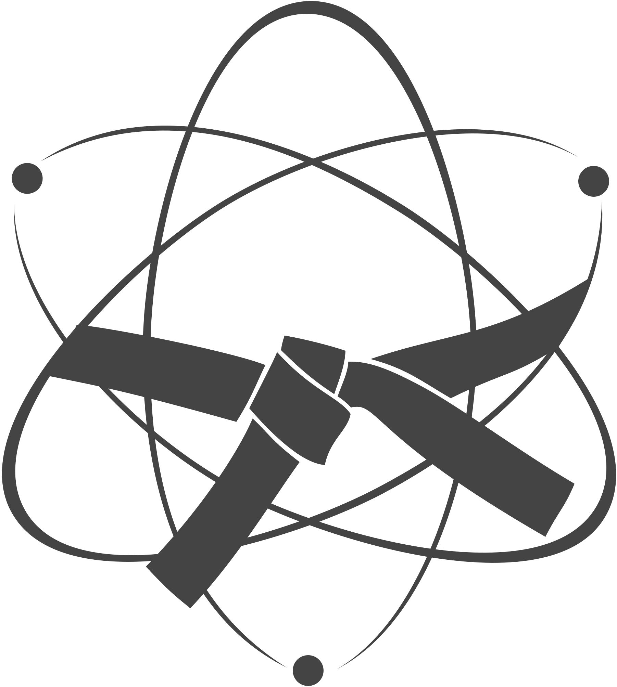

General
◆ What are all these numbers?
atomic number
number of valence orbitals
ecut hints
The number in the upper right corner of the element boxes give how many
valence electrons are included in this pseudopotential.
The numbers on the right in the middle (hints) represent the cutoff hints in Hartree.
The exact meaning of the hints can be found in the corresponding
paper suggested below.
In general, low is a good starting point for your convergence studies.
Normal can be used as a safe guess for quick calculations or for automated high-throughput calculations.
High is for testing convergence.
◆ How do I cite the PseudoDojo?
A detailed paper on the PseudoDojo and the NC pseudopotentials has been published in Computer Physics Communications:
|
|
The PseudoDojo: Training and grading a 85 element optimized norm-conserving pseudopotential table
M. J. van Setten, M. Giantomassi, E. Bousquet, M. J. Verstraete, D. R. Hamann, X. Gonze, G.-M. Rignanese
Computer Physics Communications 226, 39-54 (2018)
10.1016/j.cpc.2018.01.012
arxiv preprint
|
An important paper concerning the delta gauge is:
|
|
Reproducibility in density functional theory calculations of solids
K. Lejaeghere et. all
Science 25 Mar 2016, Vol. 351, Issue 6280
10.1126/science.aad3000
|
The GBRV tests used in the PseudoDojo are introduced in:
|
|
Pseudopotentials for high-throughput DFT calculations
K. F. Garrity, J. W. Bennett, K. M. Rabe, D. Vanderbilt
Computational Materials Science 81, 446-452 (2013)
10.1016/j.commatsci.2013.08.053
|
When using ONCVPSP type pseudopotentials please cite:
When using the PSML format pseudopotentials please cite:
|
|
The PSML format and library for norm-conserving pseudopotential data curation and interoperability
A. García, M. Verstraete, Y. Pouillon, J. Junquera
Computer Physics Communications 227, 51-71 (2018)
10.1016/j.cpc.2018.02.011
|
When using the PAW type 'pseudopotentials' please cite:
|
|
Generation of Projector Augmented-Wave atomic data: A 71 element validated table in the XML format.
F. Jollet, M. Torrent, Holzwarth
Computer Physics Communications 185, 1246 (2013)
10.1016/j.cpc.2013.12.023
|
bibtex entries
◆ Can I use the logo in my presentations and grand applications?
Yes, please feel free to do so, you can download it here:
 | or |  |
Concerning the ONCVPSP pseudopotentials
In general, the pseudos you find here are ready to use.
If you have special needs you are also free to use the inputs we provide as a staring point
to generate your own pseudopotentials.
◆ Do you also have the pseudo for my favorite GGA or LDA functional?
We provide PBE, PBEsol, and one LDA set of pseudo potentials.
The input files can be obtained from the dojo reports in the HTML files.
Using these you can generate potentials for most LDA and GGA functionals using
ONCVPSP.
We could reuse most of out PBE inputs to generate the PBEsol potentials.
Using
LibXC, which is linked to ONCVPSP, almost all functionals can be used.
◆ All the ONCVPSP potentials are with non-linear core correction, I need some without.
We usually observe better convergence with so, indeed, all are generated with nlcc.
If you really need one without take the input from the HTML page on the pseudo (select format : html and click the element).
Install
ONCVPSP.
Turn icmod to 0 in the input and generate the pseudopotential.
◆ What about hybrids and meta functionals?
These are currently under development.
◆ Do you also have the other elements?
We are currently working on the Lanthanides.
◆ Is it possible to generate NC pseudos in other formats?
ONCVPSP currently supports psp8 and upf natively.
Using the
psml patch we also generated psml files
for use with
Siesta
The psml format is available from version 0.4.